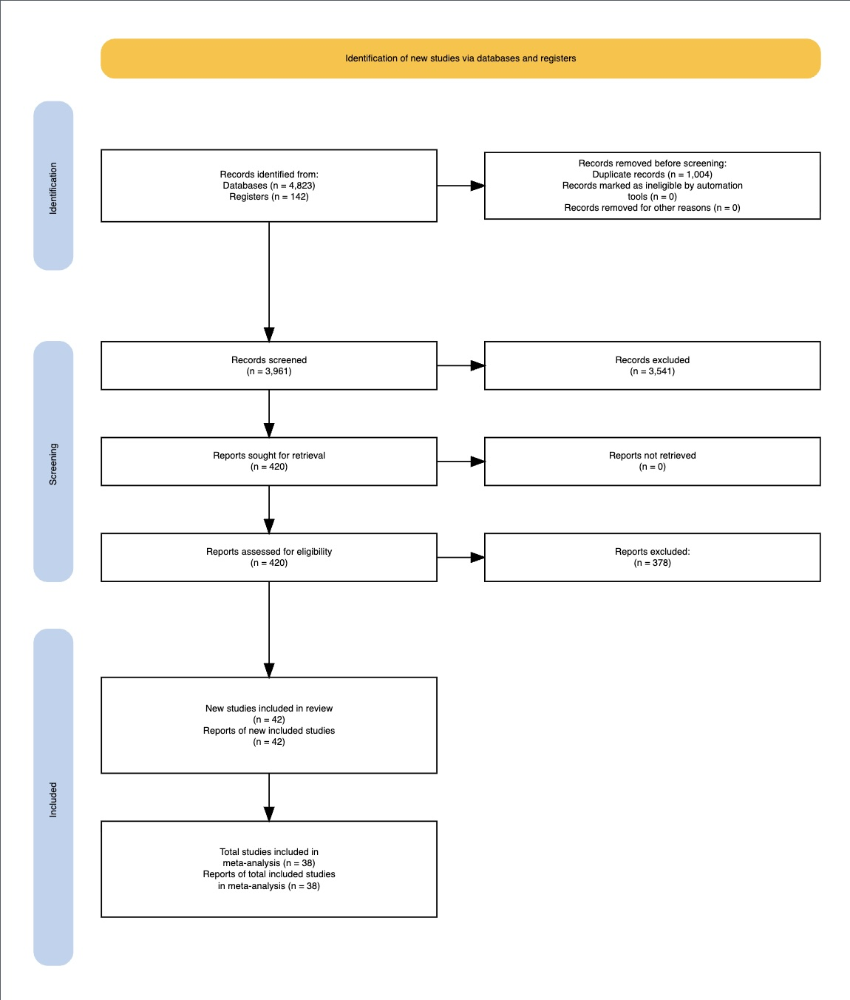
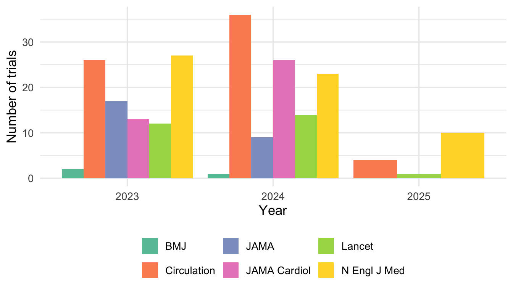

flowchart TD A["Records from databases<br/>CENTRAL = 841<br/>MEDLINE = 1923<br/>Embase = 2417"] --> B A2["Other sources<br/>Registers = 142<br/>Grey literature = 37"] --> B B["After deduplication<br/>n = 3961"] --> C C["Titles and abstracts screened<br/>n = 3961"] --> D C --> E["Excluded<br/>n = 3541"] D["Full texts assessed<br/>n = 420"] --> F D --> G["Excluded, with reasons<br/>Wrong population: 189<br/>Wrong intervention: 97<br/>Wrong outcome: 62<br/>Duplicate study: 30<br/>n = 378"] F["Studies included in the review<br/>n = 42"] --> H H["Studies included in the meta-analysis<br/>n = 38"]
2 Finding the Evidence
Learning objectives
By the end of this chapter you should be able to:
- explain why the protocol, the team and the search are methodological safeguards against bias;
- list the sources a systematic review must search, and explain why trial registers and clinical study reports matter;
- build a search strategy from concepts, controlled vocabulary and free text, and explain the trade-off between sensitivity and precision;
- describe the screening process, distinguish studies from reports, and produce a PRISMA 2020 flow diagram;
- run a reproducible PubMed search from R and turn its results into a dataset;
- describe what AI-assisted screening can and cannot yet do.
R packages: rentrez, xml2, europepmc, dplyr, ggplot2, irr, PRISMA2020.
Chapter 1 explained why synthesis is needed. This chapter covers its first methodological step: finding all the relevant evidence, without bias. It is harder than it looks. PubMed alone adds more than a million records a year; not all relevant evidence is indexed, or even published; and every choice in a search trades the risk of missing studies against the burden of screening irrelevant ones.
A biased search produces a biased review
No statistical method can recover a study that was never found. Errors at this stage propagate through every later step.
2.1 Starting right
2.1.1 Why, and who
A systematic review is worth doing because individual decision-makers cannot process the volume of primary literature, and because pre-specified, transparent methods minimise bias. Ideally, new primary research should be commissioned only after a review has shown that a gap exists (1).
A review needs a team. Cochrane will not publish a single-author review, for good reasons: independent duplicate screening reduces selection errors; content expertise and methodological expertise are both needed; involving patients and the public in framing the question improves its relevance; and conflicts of interest must be declared and managed. A diverse team is a methodological safeguard, not only an ethical one.
2.1.2 Protocol first, always
A registered protocol, written before searching begins, is the most important single safeguard against bias. It should specify:
- the question, as PICO and as an estimand (Section 1.3);
- inclusion and exclusion criteria;
- the databases to be searched and a draft search strategy;
- the screening process: who screens, how many reviewers, how disagreements are resolved;
- the data extraction form and the risk-of-bias tools;
- the planned analyses, including how heterogeneity will be handled, and pre-specified subgroup and sensitivity analyses.
Register it in PROSPERO, the international register of systematic reviews, which is free, searchable (so it also helps avoid duplicate reviews) and time-stamped (so outcome switching becomes visible). The Open Science Framework is an alternative with a broader scope and version control. Many journals now require prospective registration.
A post-hoc protocol is not a protocol
It is a description of what was done. Without a prior protocol, outcome switching, post-hoc subgroups and selective reporting leave no trace in the final paper, yet each inflates the chance of a false-positive conclusion (2).
2.2 Where to search
The Cochrane Handbook sets a minimum standard (3). Searching PubMed alone is almost never sufficient.
Bibliographic databases.
- CENTRAL, the Cochrane Central Register of Controlled Trials: curated records of trials, many identified by hand-searching; the most precise source for randomised trials.
- MEDLINE, via PubMed or Ovid: about 37 million citations, the broadest general coverage.
- Embase: stronger on European literature, pharmacology and adverse effects.
- CINAHL: nursing and allied health, important for interventions delivered by non-physicians.
Beyond databases.
- Trial registers, for unpublished and ongoing studies: ClinicalTrials.gov, the WHO ICTRP and ISRCTN.
- Regulatory documents: FDA approval packages, European Public Assessment Reports, and clinical study reports.
- Grey literature: conference abstracts, dissertations, government reports.
- Reference lists of included studies and of relevant reviews.
2.2.1 Why trial registers and regulatory documents matter
Studies with positive results are more likely to be published than those with null results (4,5). Registers record the intention to do a study before its results are known, so they provide a denominator: how many trials were started, how many were published, and whether the primary outcomes in the publication match those registered. Outcome switching between registration and publication is detectable, and common.
Clinical study reports, the full documents submitted to regulators, often run to thousands of pages per trial. They contain what journal articles leave out: patient-level adverse event narratives, all pre-specified analyses, dated protocol amendments and full statistical analysis plans. The landmark example is oseltamivir (Tamiflu). A Cochrane team that obtained the clinical study reports found that earlier reviews, based on a fraction of the data, had overstated the drug’s benefits (6). Clinical study reports can be requested from the European Medicines Agency, through freedom-of-information requests to the FDA, or through initiatives such as AllTrials.
2.3 Scope: inclusion and exclusion criteria
Before searching you must know what you are searching for. Inclusion criteria are the operational definition of the estimand; the two are two sides of the same coin.
| Criterion | Too narrow | Too broad |
|---|---|---|
| Population | One country or centre | Any adult |
| Intervention | One exact dose | Any drug in the class |
| Comparator | Placebo only | Any comparator |
| Outcome | A surrogate only | Any reported outcome |
| Study design | Only double-blind trials | Any design |
| Time | The last five years | No limit, even when the intervention has changed |
Criteria that are too narrow miss evidence and limit generalisability; criteria that are too broad make the pooled estimate clinically meaningless. Meta-analyses are not immune: when LeLorier and colleagues compared 19 meta-analyses with 12 large trials on the same questions, the meta-analyses failed to predict the trials’ results accurately about 35% of the time (7).
2.4 Designing the search strategy
2.4.1 Why not just use Google?
Google and Google Scholar rank results by opaque, proprietary algorithms. They favour apparent relevance over completeness, return different results on different days, devices and accounts, lack field-specific indexing (no MeSH, no publication-type filters, no date-of-entry control), favour highly cited papers, and leave no audit trail. A systematic review must also find the inconvenient null result on page 12, and its methods must say exactly what was searched, where and when. That requires a bibliographic database with explicit, documented, date-stamped indexing.
2.4.2 Concepts, synonyms and Boolean logic
Most searches combine three concepts:
- the population (who);
- the intervention or exposure (what);
- a study design filter (randomised trials, cohort studies, and so on).
Synonyms within a concept are joined with OR, which expands the search; concepts are joined with AND, which restricts it.
Each concept should use both controlled vocabulary (MeSH in MEDLINE, Emtree in Embase: curated, hierarchical subject headings, which can be “exploded” to include narrower terms) and free text in titles and abstracts, which catches records not yet indexed, spelling variants and new terminology. For example:
"myocardial infarction"[MeSH Terms]
OR "heart attack"[Title/Abstract]
OR "myocardial infarction"[Title/Abstract]2.4.3 Sensitivity and precision
Two measures describe a search:
\[ \text{Sensitivity (recall)} = \frac{\text{relevant records retrieved}}{\text{all relevant records}}, \qquad \text{Precision} = \frac{\text{relevant records retrieved}}{\text{all records retrieved}}. \]
The denominator of sensitivity is every relevant study, whether or not the search found it; the denominator of precision is everything the search returned. The two trade off: every restriction that improves precision risks missing studies. Systematic reviews aim for high sensitivity. Missing a study is worse than screening another thousand irrelevant records, and sensitive searches often return 5000 to 50 000 records (3).
Key point
When in doubt: retrieve more, screen more, miss less.
2.4.4 Filters and restrictions
Study design filters. Use validated filters, whose sensitivity and precision are known, rather than inventing your own. The Cochrane Highly Sensitive Search Strategy for randomised trials in MEDLINE comes in a sensitivity-maximising version and a version balancing sensitivity and precision (3); comparable filters exist for Embase and CINAHL. Do not apply a trial filter to CENTRAL, which already contains only trials.
Language. Avoid language restrictions if possible. Excluding studies not published in English can bias the results, the so-called Tower of Babel bias (8).
Date. Restrict dates only when the intervention did not exist before a certain date, or when updating an earlier review.
Journals. Restricting to particular journals is almost never justified; important trials appear in unexpected places.
2.4.5 Peer review of the search
An information specialist should review the search strategy before it is run. The PRESS checklist covers the translation of the question, Boolean and proximity operators, subject headings, text words, spelling and syntax, and limits and filters (9). Peer-reviewed strategies contain fewer errors and retrieve more relevant records. Cochrane requires an information specialist’s involvement; university health sciences libraries usually offer consultations.
2.4.6 Documenting the search
Record, for every source:
- the database and its platform (PubMed and Ovid MEDLINE are not identical);
- the date the search was run;
- the complete strategy, every line and operator;
- the number of records retrieved.
Then record the deduplication method and the numbers at every stage of the PRISMA flow diagram (Section 2.5.3). This is not bureaucracy; it is what makes the search reproducible.
The same article appears in several databases, so records must be deduplicated before screening; keep each database’s count before deduplication for the flow diagram. Reference managers such as EndNote and Zotero deduplicate well; Rayyan and Covidence are purpose-built for screening, and ASReview uses active learning to prioritise records.
2.5 Selecting studies
2.5.1 Two-stage screening
Screening applies the pre-specified inclusion criteria to the search results, in two stages, each done independently by at least two reviewers.
- Titles and abstracts. When in doubt, include; the question is resolved at the next stage. Typically 5% to 20% of records pass.
- Full texts. Each record is assessed against all inclusion criteria, and every exclusion is given a reason (wrong population, intervention, outcome or design; duplicate report). Typically 30% to 70% of full texts are included. Studies excluded at this stage are listed, with reasons, in an appendix.
Disagreements are resolved by discussion or by a third reviewer, and agreement is reported (Section 2.5.4).
2.5.2 Studies versus reports
The unit of synthesis is the study, not the report
One trial may produce a main efficacy paper, a safety paper, subgroup papers, a cost-effectiveness paper, several conference abstracts and a register entry. These are all reports of the same study. Counting them separately inflates the number of studies and double-counts participants. Link reports to studies before extracting data, using the trial registration number, authors, numbers of participants and dates (3).
2.5.3 The PRISMA flow diagram
PRISMA 2020 requires a flow diagram showing, at each stage, how many records were identified (per database, and from other sources), how many remained after deduplication, how many were excluded at title and abstract screening, how many full texts were assessed and excluded (with reasons), and how many studies were included in the review and in the meta-analysis (10).
Quarto can draw the diagram directly with Mermaid, without any R package. The numbers here are illustrative; Section 2.8 shows how to generate them from the search itself.
The PRISMA2020 package draws the official PRISMA 2020 template (11). PRISMA_data() expects the package’s full template, so the simplest approach is to read the template and overwrite only the counts you have:
Code
library(PRISMA2020)
# Start from the package's template and overwrite the counts
csv_file <- system.file("extdata", "PRISMA.csv", package = "PRISMA2020")
flow_input <- read.csv(csv_file)
set_n <- function(df, field, n) { df$n[df$data == field] <- n; df }
flow_input <- flow_input |>
set_n("database_results", 4823) |>
set_n("register_results", 142) |>
set_n("duplicates", 1004) |>
set_n("records_screened", 3961) |>
set_n("records_excluded", 3541) |>
set_n("dbr_sought_reports", 420) |>
set_n("dbr_notretrieved_reports", 0) |>
set_n("dbr_assessed", 420) |>
set_n("dbr_excluded", 378) |>
set_n("new_studies", 42) |>
set_n("new_reports", 42) |>
set_n("total_studies", 42) |>
set_n("total_reports", 42) |>
set_n("total_studies_ma", 38) |>
set_n("total_reports_ma", 38)
flow_data <- PRISMA_data(flow_input)
PRISMA_flowdiagram(flow_data,
interactive = TRUE,
previous = FALSE, # not an update of an earlier review
other = FALSE, # no separate "other methods" arm
meta_analysis = TRUE) # show the meta-analysis box
2.5.4 Agreement between reviewers
Agreement between two screeners is usually summarised by Cohen’s κ, which corrects the observed agreement \(P_o\) for the agreement \(P_e\) expected by chance:
\[ \kappa = \frac{P_o - P_e}{1 - P_e}. \]
Values are conventionally described as slight (below 0.20), fair (0.21 to 0.40), moderate (0.41 to 0.60), substantial (0.61 to 0.80) and almost perfect (above 0.80) (12).
The calculation is simple enough to do by hand. Suppose two reviewers screen 10 records (1 = include):
Code
reviewer1 <- c(1, 0, 1, 1, 0, 1, 0, 0, 1, 1)
reviewer2 <- c(1, 0, 1, 0, 0, 1, 0, 1, 1, 1)
p_o <- mean(reviewer1 == reviewer2) # observed agreement
p_e <- mean(reviewer1) * mean(reviewer2) + # both include by chance
(1 - mean(reviewer1)) * (1 - mean(reviewer2)) # both exclude by chance
kappa <- (p_o - p_e) / (1 - p_e)
round(c(observed = p_o, chance = p_e, kappa = kappa), 2)observed chance kappa
0.80 0.52 0.58 The reviewers agree on 80% of records, but 52% agreement would be expected by chance alone, so κ = 0.58, “moderate”. The irr package gives the same result, with a test:
Code
irr::kappa2(cbind(reviewer1, reviewer2)) Cohen's Kappa for 2 Raters (Weights: unweighted)
Subjects = 10
Raters = 2
Kappa = 0.583
z = 1.84
p-value = 0.0651
κ depends on prevalence
When eligible records are rare, as they usually are in screening, κ can be low even when the reviewers agree on almost every record. Report the raw percentage agreement alongside κ, and resolve every disagreement.
2.6 Searching from R
2.6.1 Why code a search?
A search run through a web interface is reproducible only if the exact strategy is recorded. A search written as code is reproducible by construction, and it brings other advantages:
- reproducibility: the script and its date are the exact record of what was done;
- scale: the same search can be run across many journals or years at once;
- automation: searches can be rerun on a schedule, which matters for living reviews (Section 2.9);
- integration: results arrive in R as data, ready for screening and for counting in the flow diagram.
Several packages give access to bibliographic databases: rentrez (the NCBI Entrez API, used by PubMed), xml2 (to parse the XML that PubMed returns), easyPubMed (a higher-level PubMed wrapper), europepmc (Europe PMC), and wosr and rscopus (Web of Science and Scopus, which require institutional access or an API key).
2.6.2 PubMed query syntax
PubMed queries use field tags:
Boolean operators (AND, OR, NOT) must be in capitals; quotation marks enclose a phrase; an asterisk truncates (cardio*). Test every query in the PubMed web interface before using it in code. A typical query looks like this:
("cardiovascular diseases"[MeSH Terms]
OR "heart failure"[MeSH Terms]
OR cardiovascular[Title/Abstract])
AND "randomized controlled trial"[PT]
AND "humans"[MeSH Terms]
AND (2020/01/01:3000/12/31[PDAT])
NOT ("case reports"[PT] OR "letter"[PT])2.6.3 Querying PubMed with rentrez
A search takes three steps: count the matching records, retrieve their PubMed identifiers (PMIDs), and fetch the records themselves. The code below queries a live database, so it is not run when the book is built; its results would change from day to day.
Code
library(rentrez)
library(xml2)
query <- '("heart failure"[MeSH Terms] OR "atrial fibrillation"[MeSH Terms])
AND "randomized controlled trial"[Publication Type]
AND "humans"[MeSH Terms]
AND (2022/01/01:2024/12/31[PDAT])'
# 1. Count the matching records (retmax = 0 returns the count only)
entrez_search(db = "pubmed", term = query, retmax = 0)$count
# 2. Retrieve the PMIDs
pmids <- entrez_search(db = "pubmed", term = query,
retmax = 500, sort = "pub date")$ids
# 3. Fetch the records as XML (at most 200 per request)
xml_raw <- entrez_fetch(db = "pubmed", id = pmids[1:50],
rettype = "xml", parsed = FALSE)
records <- xml_find_all(read_xml(xml_raw), ".//PubmedArticle")
length(records)Each record is an XML document. Two small functions extract the fields we need into one row of a data frame:
Code
# Extract the text of the first node matching an XPath, or NA if absent
extract_text <- function(node, xpath) {
result <- xml_find_first(node, xpath)
if (inherits(result, "xml_missing")) return(NA_character_)
xml_text(result)
}
# One PubMed record -> one row
parse_article <- function(node) {
year <- extract_text(node, ".//PubDate/Year")
if (is.na(year)) year <- extract_text(node, ".//PubDate/MedlineDate")
data.frame(
PMID = extract_text(node, ".//PMID"),
Title = extract_text(node, ".//ArticleTitle"),
Journal = extract_text(node, ".//Journal/Title"),
JournalAbbrev = extract_text(node, ".//Journal/ISOAbbreviation"),
Year = year,
Abstract = paste(xml_text(xml_find_all(node, ".//Abstract/AbstractText")),
collapse = " "),
stringsAsFactors = FALSE
)
}2.6.4 A reusable search function
The function below wraps these steps: it builds the query from MeSH terms, optional journals and dates; fetches the records in batches of 200, pausing between requests to respect NCBI’s limit of three requests per second; parses them; and saves the result to a CSV file.
Code
fetch_rcts <- function(mesh_terms, start, end, journals = NULL,
retmax = 5000, out_csv = NULL) {
# 1. Build the query
pop_clause <- paste0("(", paste(sprintf('"%s"[MeSH Terms]', mesh_terms),
collapse = " OR "), ")")
journal_clause <- if (is.null(journals)) "" else
paste0(" AND (", paste(sprintf('"%s"[TA]', journals), collapse = " OR "), ")")
query <- paste0(
pop_clause, journal_clause,
' AND "randomized controlled trial"[Publication Type]',
' AND "humans"[MeSH Terms]',
sprintf(" AND (%s:%s[PDAT])", start, end),
' NOT ("case reports"[Publication Type] OR "letter"[Publication Type])'
)
# 2. Retrieve the PMIDs
n_total <- rentrez::entrez_search(db = "pubmed", term = query, retmax = 0)$count
ids <- rentrez::entrez_search(db = "pubmed", term = query,
retmax = min(n_total, retmax),
sort = "pub date")$ids
# 3. Fetch and parse in batches of 200
batches <- split(ids, ceiling(seq_along(ids) / 200))
results <- lapply(batches, function(batch) {
xml_raw <- rentrez::entrez_fetch(db = "pubmed", id = batch,
rettype = "xml", parsed = FALSE)
Sys.sleep(0.34) # at most 3 requests per second
recs <- xml_find_all(read_xml(xml_raw), ".//PubmedArticle")
do.call(rbind, lapply(recs, parse_article))
})
df <- do.call(rbind, results)
# 4. Save a dated copy
if (!is.null(out_csv)) {
dir.create(dirname(out_csv), recursive = TRUE, showWarnings = FALSE)
write.csv(df, out_csv, row.names = FALSE)
}
df
}We use it to find randomised trials in five cardiovascular conditions published in six general and cardiology journals in 2023 and 2024. The search was run once and saved; the book reads the saved copy, so its numbers do not change each time it is rebuilt. To rerun the search, delete data/cv_rcts_demo.csv.
Code
if (!file.exists("data/cv_rcts_demo.csv")) {
cv_rcts <- fetch_rcts(
mesh_terms = c("heart failure", "atrial fibrillation",
"coronary artery disease", "hypertension", "stroke"),
journals = c("N Engl J Med", "Lancet", "JAMA", "BMJ",
"JAMA Cardiol", "Circulation"),
start = "2023/01/01",
end = "2024/12/31",
out_csv = "data/cv_rcts_demo.csv")
}
cv_rcts <- read.csv("data/cv_rcts_demo.csv", stringsAsFactors = FALSE)
nrow(cv_rcts)[1] 221The search retrieved 221 articles. Table 2.3 shows the first few.
Code
cv_rcts |>
select(PMID, Title, JournalAbbrev, Year) |>
head(4) |>
mutate(Title = str_trunc(Title, 70)) |>
kable(col.names = c("PMID", "Title", "Journal", "Year"))| PMID | Title | Journal | Year |
|---|---|---|---|
| 39644913 | TransCatheter aortic valve implantation and fractional flow reserve… | Lancet | 2025 |
| 39555822 | Left Atrial Appendage Closure after Ablation for Atrial Fibrillation. | N Engl J Med | 2025 |
| 39555827 | Intensive Blood-Pressure Control in Patients with Type 2 Diabetes. | N Engl J Med | 2025 |
| 39556714 | Effects of Tirzepatide on the Clinical Trajectory of Patients With … | Circulation | 2025 |
Because the results are data, they can be summarised like any other data (Figure 2.3).
Code
cv_rcts |>
count(JournalAbbrev, Year) |>
ggplot(aes(x = factor(Year), y = n, fill = JournalAbbrev)) +
geom_col(position = "dodge") +
scale_fill_brewer(palette = "Set2") +
labs(x = "Year", y = "Number of trials", fill = NULL) +
theme(legend.position = "bottom")
A sudden drop in the most recent period usually reflects publication lag rather than fewer trials; journals that dominate are worth prioritising for citation chasing.
2.6.5 Europe PMC
rentrez queries the same database as the PubMed website. The europepmc package queries Europe PMC, which overlaps with PubMed but adds preprints (bioRxiv, medRxiv), full-text search of open-access articles, citation links and links to deposited datasets. As before, the search was run once and saved.
Code
if (!file.exists("data/epmc_hf_trials.csv")) {
epmc_hf <- europepmc::epmc_search(
query = 'MESH:"Heart Failure" AND PUB_TYPE:"Clinical Trial" AND FIRST_PDATE:[2022 TO 2024]',
limit = 500,
output = "parsed")
write.csv(epmc_hf, "data/epmc_hf_trials.csv", row.names = FALSE)
}
epmc_hf <- read.csv("data/epmc_hf_trials.csv", stringsAsFactors = FALSE)
epmc_hf |>
select(title, journalTitle, pubYear, pmid) |>
head(3) |>
mutate(title = str_trunc(title, 70)) |>
kable(col.names = c("Title", "Journal", "Year", "PMID"))| Title | Journal | Year | PMID |
|---|---|---|---|
| Effect of emerging digital technologies and methodologies combined … | Trials | 2024 | 38303057 |
| Agonist antibody to guanylate cyclase receptor NPR1 regulates vascu… | Nature | 2024 | 39261724 |
| Prospective randomised unblinded comparison of sputum viscosity for… | PLoS One | 2023 | 37590203 |
API keys
Without an NCBI API key you may make three requests per second; with one, ten. Register at ncbi.nlm.nih.gov/account, then store the key in your .Renviron file (ENTREZ_KEY=...), where rentrez finds it automatically. Never put API keys in scripts or commit them to version control.
2.7 AI-assisted screening
Machine learning and large language models (LLMs) are increasingly used to help with screening.
- ASReview is open source and runs locally: after you label a few dozen records, an active-learning model ranks the rest so that likely inclusions are seen first.
- Rayyan is web-based, with a free tier; it suggests decisions that reviewers confirm.
- Covidence covers the whole workflow, from import to screening, extraction and risk of bias.
- A custom LLM pipeline can send each abstract, with the inclusion criteria, to a model through its API and record a decision and reason for every record.
These tools can classify abstracts quickly against well-defined criteria, prioritise records for human review, and draft data extraction for human checking. They cannot yet replace duplicate human review without validated error rates, apply ambiguous criteria consistently, assess risk of bias, or guarantee that no relevant study is missed.
Validate before you rely on it
If an automated screener is to replace one of the two human reviewers, first measure its sensitivity against human decisions on a labelled sample of records from your own review, and report it. Methods guidance in this area is changing quickly; check the current Cochrane guidance before you start.
2.8 Closing the loop: from search to flow diagram
The flow diagram in Section 2.5.3 used numbers typed by hand. In a scripted review, every number is a variable produced by the search and screening code, and is never retyped. Here the objects are stand-ins, with the same numbers as Figure 2.1; in your own review they would already exist, created by your database searches and screening.
Code
# Stand-ins for objects your own pipeline would create
central_search <- list(count = 841) # e.g. from a CENTRAL export
medline_search <- list(count = 1923) # e.g. rentrez::entrez_search()
embase_search <- list(count = 2417)
registers_n <- 142
greylit_n <- 37
deduped_df <- data.frame(id = 1:3961) # after deduplication
passed_ta_df <- data.frame(id = 1:420) # passed title/abstract screening
included_df <- data.frame(id = 1:42,
in_meta_analysis = c(rep(TRUE, 38), rep(FALSE, 4)))
# One object holding every number in the flow diagram
counts <- list(
central = central_search$count,
medline = medline_search$count,
embase = embase_search$count,
other = registers_n + greylit_n,
no_dupes = nrow(deduped_df),
ta_excluded = nrow(deduped_df) - nrow(passed_ta_df),
full_text = nrow(passed_ta_df),
ft_excluded = nrow(passed_ta_df) - nrow(included_df),
qualitative = nrow(included_df),
quantitative = sum(included_df$in_meta_analysis))
str(counts)List of 10
$ central : num 841
$ medline : num 1923
$ embase : num 2417
$ other : num 179
$ no_dupes : int 3961
$ ta_excluded : int 3541
$ full_text : int 420
$ ft_excluded : int 378
$ qualitative : int 42
$ quantitative: int 38The same counts object can feed PRISMA2020 (replace the typed numbers in Section 2.5.3 with counts$...) and a Mermaid diagram built with glue() and drawn by DiagrammeR::mermaid(). Change the search, rerun the script, and every diagram and number in the report updates together.
2.9 Keeping the search current
A review starts to go out of date the day its search is run. There are three ways to keep it current:
- Search alerts. PubMed’s “Create alert” emails new records matching a saved search.
- Scheduled reruns. A scripted search can be rerun automatically, for example with a scheduled job or GitHub Actions, and new records flagged.
- Living systematic reviews, which are updated continuously as new evidence appears, with pre-specified rules for when the analysis is redone (13).
With fetch_rcts(), an update is just a new date range:
Code
last_run <- as.Date("2024-12-01")
today <- Sys.Date()
new_results <- fetch_rcts(
mesh_terms = "heart failure",
start = format(last_run, "%Y/%m/%d"),
end = format(today, "%Y/%m/%d"),
out_csv = paste0("data/update_", today, ".csv"))
cat(nrow(new_results), "new articles since", format(last_run), "\n")Searches should be updated shortly before a review is submitted, and in any case no more than 12 months before publication (3).
2.10 Common mistakes
| Mistake | Remedy |
|---|---|
| Searching only PubMed | Add CENTRAL, Embase and trial registers |
| Using MeSH only | Add title and abstract synonyms |
| Restricting language without justification | Search all languages; translate when needed |
| Screening before deduplicating | Deduplicate all exports first |
| Not recording the date of each search | Record it, or let the script do so with Sys.Date() |
| Changing the strategy after seeing results | Finalise the strategy before the first run; document amendments |
| Not saving the complete strategy | Export it and keep it under version control |
| Adding exclusion criteria after screening | Pre-specify them in the registered protocol; document any deviations |
Key points
- A biased search produces a biased review; no analysis can recover a missing study.
- Register the protocol before running the first search.
- Search several databases, trial registers and regulatory sources, not PubMed alone.
- Favour sensitivity over precision: screen more, miss less.
- The unit of synthesis is the study, not the report.
- Code the search: reproducibility is the point, not an option.
- Living reviews need living searches, and automation helps.
Exercises
- Choose a clinical question of your own and write it as an estimand (Section 1.3). Translate it into a PubMed query with population, intervention and design concepts, using MeSH terms and free text for each.
- Run your query with
fetch_rcts()(or the threerentrezsteps). Record the date and the number of hits. Read 10 abstracts and note which would be genuinely difficult to classify against your inclusion criteria. - Ask a colleague to screen the same 10 abstracts independently. Calculate your percentage agreement and κ. Why might κ be low even if you agree on most records?
- Look up the trial registration of one included trial on ClinicalTrials.gov. Do the registered primary outcomes match the published ones?